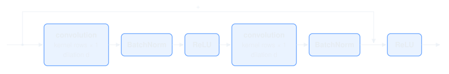
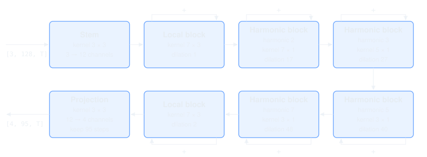
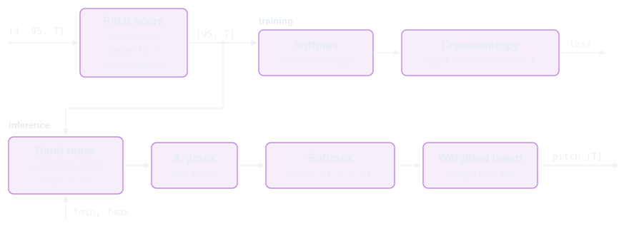
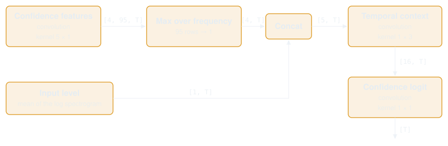
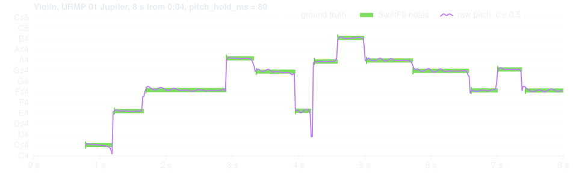

The arXiv paper describes SwiftF0 0.1.x. This page describes 0.3.x, the version that runs here and in the Python package: a network with 14 386 parameters that learns the harmonic pattern on a log-frequency grid, trained with the code in the training repository.
Audio goes through four stages in the network, and a fifth step outside it turns the result into notes:

fmin to fmax and the loudness.SwiftF0 first measures which frequencies the audio contains. It does this three times, looking at 32, 64 and 128 ms of audio at once. It then moves the results onto a log-frequency grid.
A pitched sound repeats itself. Over a few tens of milliseconds it is close to periodic. Any periodic signal with zero mean is a sum of sinusoids at multiples of one frequency \(f_0\). If the signal repeats every \(T\) seconds, \(f_0 = 1/T\). For example, \(T = 5\) ms \(= 0.005\) s gives \(f_0 = 1/0.005 = 200\) Hz. The sum of these sinusoids is the Fourier series:
\[ x(t) = \sum_{k=1}^{\infty} a_k \cos(2\pi k f_0 t + \varphi_k) \]Here \(x(t)\) is the waveform and \(t\) is time. Each term is a harmonic: a pure tone at \(k\) times \(f_0\). \(a_k\) says how strong it is, \(\varphi_k\) where it starts in its cycle. The first harmonic, at \(f_0\), is the fundamental. Its frequency is the pitch you hear. The others sit at \(2f_0\), \(3f_0\), \(4f_0\) and so on. How strong each one is differs from instrument to instrument, but they are always whole multiples of \(f_0\). So finding the pitch means finding the \(f_0\) that all the harmonics are multiples of.
The Fourier series says which frequencies a pitched sound contains, but not how to find them. The Fourier transform does that: it takes a stretch of the waveform and returns how strong each frequency is in it. For a pitched sound the result has peaks at \(f_0\), \(2f_0\), \(3f_0\) and so on. SwiftF0 uses the short-time Fourier transform (STFT). It applies the Fourier transform to a window that slides along the audio in hops of 256 samples (16 ms at 16 kHz).
No single window works for every pitch. A short window cannot separate the harmonics of a low pitch. A long window can, but it cannot tell when the pitch changes inside it. SwiftF0 therefore uses three windows, 32, 64 and 128 ms long. The network learns which one to trust at each frequency.
Take a window of \(w\) samples, \(w\) = 512, 1024 or 2048. The transform treats the \(w\) samples as one period of a signal that repeats forever. Where one copy ends and the next begins, that signal is discontinuous. A discontinuity spreads energy over all frequencies and hides weaker harmonics. The Hann window \(h[n] = \tfrac{1}{2}\bigl(1 - \cos(2\pi n / w)\bigr)\) removes the discontinuity. It is a bell shape that is 1 in the middle and 0 at both ends. The STFT is then:
\[ S_w[b, t] = \sum_{n=0}^{w - 1} x[256\,t + n - w/2]\, h[n]\, e^{-2\pi i\, b n / w} \]Here \(x[\cdot]\) is the waveform sampled at 16 kHz, taken as 0 outside the clip, so window \(t\) is centered on sample \(256\,t\). \(t\) is the frame index and \(b\) the frequency bin at \(f_b = b \cdot 16000 / w\) Hz, so neighboring bins are \(16000 / w\) Hz apart. For the three windows, the bins are 31.25, 15.625 and 7.8125 Hz apart. Audio is a real signal, so the bins above \(w / 2\) only mirror the ones below and are dropped. The remaining bins cover 0 Hz to 8 kHz. This upper limit is half the sample rate and is called the Nyquist frequency. The three windows therefore keep 257, 513 and 1025 bins.
The bins of an STFT are evenly spaced in Hz, but musical notes are not. Going one key higher on a piano multiplies the frequency by \(\sqrt[12]{2} \approx 1.059\). Twelve keys higher is one octave, which doubles the frequency. MIDI numbers the keys, one per semitone. A4 is MIDI number 69 and is tuned to 440 Hz. Every other note follows by multiplying:
\[ f_{m+1} = \sqrt[12]{2}\, f_m, \qquad f_{m+12} = 2 f_m, \qquad f_m = 440 \cdot 2^{(m - 69)/12} \]Going from MIDI number 21 (A0, 27.5 Hz) to 22 (A♯0, 29.1 Hz) is a smaller distance in Hz than going from 69 (A4, 440 Hz) to 70 (A♯4, 466.2 Hz).
The STFT does not follow this rule. In the 1024 window, going from bin 1 (15.625 Hz) to bin 2 (31.25 Hz) is the same distance in Hz as going from bin 49 (765.6 Hz) to bin 50 (781.25 Hz). The network needs a frequency axis that follows the piano instead.
SwiftF0 builds such an axis from \(f_{\min} = 46.875\) Hz to \(f_{\max} = 2093.75\) Hz, the pitch range it detects, roughly F♯1 (46.2 Hz) to C7 (2093.0 Hz). Both limits fall exactly on bins of the 1024 window, bins 3 and 134. The range holds \(K = 95\) steps, from step 0 at \(f_{\min}\) to step 94 at \(f_{\max}\). Each step multiplies the frequency by the same number. The piano has 12 steps per octave. SwiftF0's number of steps per octave, \(B\), follows from \(K\), \(f_{\min}\) and \(f_{\max}\). Step \(r\) plays the role of the MIDI number \(m\):
\[ B = \frac{K - 1}{\log_2(f_{\max} / f_{\min})} \approx 17.15 \] \[ f_{r+1} = \sqrt[B]{2}\, f_r, \qquad f_r = f_{\min} \cdot 2^{r/B} \]While the piano multiplies by \(\sqrt[12]{2} \approx 1.059\) from one key to the next, SwiftF0 multiplies by \(\sqrt[B]{2} \approx 1.041\) from one step to the next. An octave is 12 keys on the piano and 17 steps here. Continued up to 8 kHz, the axis has 128 steps. Only the first 95 steps, up to \(f_{\max}\), are pitch candidates. The steps above are kept as extra information: the network recognizes a note by its harmonics, and for a high note those lie above \(f_{\max}\). A note at 1500 Hz has its harmonics at 3000, 4500 and 6000 Hz.
The axis is now defined, but the values on it are not. The STFT gives one value per bin, the network needs one value per step, and the two grids do not line up. shows the three grids between 100 and 400 Hz.

Interpolation solves this. Linear interpolation estimates a value between two samples as a weighted sum of both. The weights add up to 1. SwiftF0 does the same with more terms. For step \(r\) it takes every bin between the neighboring steps \(f_{r-1}\) and \(f_{r+1}\). Each bin gets a weight from a triangle that is 1 at \(f_r\) and 0 at the two neighbors:
\[ \Lambda_r(f) = \max\Bigl(0,\ \min\Bigl(\frac{f - f_{r-1}}{f_r - f_{r-1}},\ \frac{f_{r+1} - f}{f_{r+1} - f_r}\Bigr)\Bigr) \]The weights are then scaled to add up to 1:
\[ W_w[r, b] = \frac{\Lambda_r(f_b)}{\sum_{b'} \Lambda_r(f_{b'})} \]Together they form one matrix per window, with 128 rows for the steps and one column per bin: 257, 513 or 1025. Resampling is a single matrix product with the magnitudes of the STFT:
\[ A_w = W_w\, |S_w| \]As an example, take step 52 at 383.4 Hz, highlighted at the right end of . Its neighbors are step 51 at 368.3 Hz and step 53 at 399.3 Hz. In the 1024 window, two bins lie between them, bin 24 at 375 Hz and bin 25 at 390.625 Hz. shows the triangle of step 52 and the heights it gives the two bins.

Bin 24 lies on the rising side of the triangle, bin 25 on the falling side:
\[ \Lambda_{52}(375) = \frac{375 - 368.3}{383.4 - 368.3} = \frac{6.7}{15.1} = 0.44 \] \[ \Lambda_{52}(390.6) = \frac{399.3 - 390.6}{399.3 - 383.4} = \frac{8.7}{15.9} = 0.55 \]The heights sum to 0.99, so scaling them to add up to 1 gives 0.45 and 0.55. Row 52 of the product is therefore
\[ A_{1024}[52, t] = 0.45\, \bigl|S_{1024}[24, t]\bigr| + 0.55\, \bigl|S_{1024}[25, t]\bigr| \]With two bins this is linear interpolation. At higher frequencies the triangle widens. By step 100 it holds thirteen bins of the 1024 window. At low frequencies the triangle can be narrower than the bin spacing and hold no bin at all. Such a step takes the value of the nearest bin.
One operation remains. A loud harmonic can be a thousand times stronger than a quiet one, and the network should see both. The logarithm compresses this range. A small constant, \(10^{-8}\), keeps it finite where a step holds no energy. With that the features of window \(w\) are complete:
\[ X_w = \ln\bigl( A_w + 10^{-8} \bigr) \]The three windows give three channels, one per window. Stacked, they form the feature map of size \(3 \times 128 \times T\): one channel per window, one row per step and one column per frame, one every 16 ms.
The real implementation is features in model.py of the training repository.
SAMPLE_RATE = 16000
HOP = 256
WINDOWS = (1024, 2048, 512)
K = 95
F_MIN, F_MAX = 46.875, 2093.75
# the grid, computed once
B = (K - 1) / log2(F_MAX / F_MIN) # 17.15 steps per octave
R = ceil(B * log2(SAMPLE_RATE / 2 / F_MIN)) # 128 steps up to 8 kHz
f = [F_MIN * 2 ** (r / B) for r in range(R)] # f_r
# one triangle matrix per window, computed once
for w in WINDOWS:
bins = [b * SAMPLE_RATE / w for b in range(w // 2 + 1)] # 257, 513 or 1025 bin frequencies
W[w] = zeros(R, len(bins))
for r in range(R):
lo = f[r - 1] if r > 0 else f[r] ** 2 / f[r + 1] # neighboring steps,
hi = f[r + 1] if r < R - 1 else f[r] ** 2 / f[r - 1] # one step further at the ends
for b, fb in enumerate(bins):
if lo < fb < f[r]: W[w][r, b] = (fb - lo) / (f[r] - lo) # rising side
if f[r] <= fb < hi: W[w][r, b] = (hi - fb) / (hi - f[r]) # falling side
if sum(W[w][r]) < 1e-6: # no bin under a narrow triangle
W[w][r] = 0
W[w][r, argmin(abs(bins - f[r]))] = 1 # take the nearest bin
W[w][r] /= sum(W[w][r]) # weights add up to 1
# per audio clip
def features(audio):
T = len(audio) // HOP # one frame every 16 ms
channels = []
for w in WINDOWS:
S = stft(pad(audio, w // 2), window=hann(w), n_fft=w, hop=HOP) # centered, complex, [w // 2 + 1, T]
X = W[w] @ abs(S) # [128, T], the interpolation
channels.append(log(X + 1e-8))
return stack(channels) # [3, 128, T]
The encoder describes every candidate pitch with four features. They are built from the energy at its harmonics.
The encoder relies on one property of the log-frequency grid. Solving \(f_r = f_{\min} \cdot 2^{r/B}\) for \(r\) gives the step of any frequency \(f\):
\[ r(f) = B \log_2 \frac{f}{f_{\min}} \]Harmonic \(k\) of a pitch \(f_0\) sits at \(k f_0\). Since the log of a product is the sum of the logs, its step is
\[ r(k f_0) = B \log_2 \frac{k f_0}{f_{\min}} = r(f_0) + B \log_2 k \]Harmonic \(k\) is therefore \(B \log_2 k\) steps above the fundamental, whatever the pitch. The table shows a note at 110 Hz and a note at 440 Hz with their first five harmonics, the step of each, and its distance from the fundamental:
| k | note at 110 Hz | note at 440 Hz | ||||
|---|---|---|---|---|---|---|
| harmonic | step r | distance | harmonic | step r | distance | |
| 1 | 110 Hz | 21.1 | 0.0 | 440 Hz | 55.4 | 0.0 |
| 2 | 220 Hz | 38.3 | +17.1 | 880 Hz | 72.6 | +17.1 |
| 3 | 330 Hz | 48.3 | +27.2 | 1320 Hz | 82.6 | +27.2 |
| 4 | 440 Hz | 55.4 | +34.3 | 1760 Hz | 89.7 | +34.3 |
| 5 | 550 Hz | 60.9 | +39.8 | 2200 Hz | 95.2 | +39.8 |
The distances are the same for both notes, 17, 27, 34 and 40 steps. Only the starting step differs. A change of pitch moves the whole harmonic pattern up or down without changing its shape.
The classical way to use this is subharmonic summation (Hermes, 1988). Let \(d_k = \operatorname{round}(B \log_2 k)\) be the offsets from the table, rounded to whole steps: \(d_1 = 0\), \(d_2 = 17\), \(d_3 = 27\), \(d_4 = 34\). In frame \(t\), a candidate pitch at step \(r\) is scored by adding up the feature values of one window at its harmonics, and the pitch is the candidate with the highest score:
\[ z[r, t] = \sum_{k=1}^{N} g_k\, X_w[r + d_k, t], \qquad r^* = \arg\max_r z[r, t] \]The weights \(g_k\) are positive and decrease with \(k\), so the fundamental counts most and each higher harmonic a little less. Hermes used \(g_k = 0.84^{k-1}\) and \(N = 15\) harmonics. This gives 1, 0.84, 0.71 and 0.59 for the first four. He tuned these values for speech.
Fixed weights have limits. Hermes reports 2.5 % wrong frames on clean speech and 5.7 % when the fundamental is filtered out. With weights of \(0.90^{k-1}\), the error without the fundamental drops to 4.1 %. Weights that suit one condition hurt another.
Instead of fixing the weights, SwiftF0 learns them from data. A convolution with dilation \(d\) along the frequency axis reads the steps \(r, r + d, r + 2d, \ldots\). With \(d = 17\) it computes a weighted sum of \(X_w\) at \(r, r + 17, r + 34, \ldots\), which is Hermes' sum over harmonics 1, 2 and 4 with learned weights. However, reading only upward cannot tell whether \(r\) is the fundamental or only a harmonic of a lower \(f_0\). SwiftF0 therefore makes the convolution two-sided. With \(d = d_2 = 17\) and kernel size 7 it reads these steps, with the candidate \(r\) in the middle:
\[ r - 51, r - 34, r - 17, r, r + 17, r + 34, r + 51 \]A harmonic block is two such convolutions, each followed by a BatchNorm, with a ReLU between them. A residual connection adds the block's input back to its output:

While Hermes gets by with a single sum, SwiftF0 needs several blocks. His sum uses the offsets directly: 0, 17, 27, 34, 40, … A dilated convolution reads only multiples of one number. With dilation 17 it reads the offsets 0, 17, 34 and 51. These are harmonics 1, 2, 4 and 8. Harmonic 3 at offset 27 is never read. SwiftF0 therefore applies four blocks with dilations \(d_2 = 17\), \(d_3 = 27\), \(d_5 = 40\) and \(d_7 = 48\) one after the other, the offsets of harmonics 2, 3, 5 and 7. Dilation 27 with kernel 5 reaches 3 and 9. Dilations 40 and 48 with kernel 3 reach 5 and 7. Stacked blocks widen the receptive field, the set of steps that can influence an output. After the 17 and the 27 block, an output at \(r\) can see step \(r + d_2 + d_3 = r + 44\), so harmonic 6 is within reach as well.
The harmonic encoder has a few more parts around the four harmonic blocks:

The input is the feature map from section 1, of size \(3 \times 128 \times T\). The stem, a 3 × 3 convolution, combines the three windows into twelve new channels: \(12 \times 128 \times T\). The harmonic blocks read one frame at a time. The two local blocks use 7 × 3 kernels with dilations 1 and 2, so they also read the frame before and after. The projection is a 3 × 3 convolution that reduces the twelve channels to four. Fewer channels reduce the parameter count of the two heads. After it, the steps above \(f_{\max}\) are dropped. The output is \(4 \times 95 \times T\).
Every kernel that spans three frames is made symmetric: the weight for the frame before equals the weight for the frame after. The reason is that playing a song forwards or backwards does not change its pitch. In model.py this is the class TimeSym. The pseudocode below leaves it out.
The real implementation is HarmonicBlock and SwiftF0Net in model.py.
CHANNELS = 12
BLOCKS = [("local", 1, 7, 3), # kind, dilation or harmonic, kernel rows, kernel frames
("harmonic", 2, 7, 1),
("harmonic", 3, 5, 1),
("harmonic", 5, 3, 1),
("harmonic", 7, 3, 1),
("local", 2, 7, 3)]
def harmonic_block(h, d, rows, frames):
y = conv2d(h, kernel=(rows, frames), dilation=(d, 1)) # 12 -> 12 channels
y = relu(batchnorm(y))
y = conv2d(y, kernel=(rows, frames), dilation=(d, 1))
y = batchnorm(y)
return relu(h + y) # residual connection
def encoder(X): # X: [3, 128, T]
h = relu(batchnorm(conv2d(X, kernel=(3, 3)))) # stem, 3 -> 12 channels
for kind, v, rows, frames in BLOCKS:
d = round(B * log2(v)) if kind == "harmonic" else v # 17, 27, 40, 48 or 1, 2
h = harmonic_block(h, d, rows, frames)
h = relu(batchnorm(conv2d(h, kernel=(3, 3)))) # projection, 12 -> 4 channels
return h[:, :95, :] # drop the steps above f_max, [4, 95, T]
The pitch head turns the four features of each step into one score \(z_r\) with a 1 × 1 convolution. The step with the highest score is the pitch. This section works on a single frame, so the frame index is left out. shows what happens with the scores in training and at inference:

A real pitch rarely lands exactly on one of the 95 steps, so a target with all its weight on the nearest step would be off by up to half a step. Instead, the target is spread over the two neighboring steps. Section 2 gives the position of \(f_0\) on the step axis, \(r(f_0)\). Split it into a whole number \(\ell\) and a rest \(\alpha\):
\[ r(f_0) = \ell + \alpha, \qquad \ell = \lfloor r(f_0) \rfloor, \qquad \alpha = r(f_0) - \ell \]\(\ell\) is the step below the pitch. For example, 382 Hz has \(r(f_0) = 51.9 = 51 + 0.9\). The target puts \(1 - \alpha\) on step \(\ell\) and \(\alpha\) on step \(\ell + 1\), the linear interpolation of section 1 applied to the pitch. The loss is the cross-entropy between this target and the softmax of the scores. Only frames with a true pitch have a pitch loss:
\[ L = -(1 - \alpha)\, \ln p_\ell - \alpha\, \ln p_{\ell+1}, \qquad p_r = \frac{e^{z_r}}{\sum_{r'} e^{z_{r'}}} \]The loss is smallest when the probabilities at steps \(\ell\) and \(\ell + 1\) are \(1 - \alpha\) and \(\alpha\).
At inference the decoder turns the scores back into a frequency. In the Python package, the parameters fmin and fmax can limit the search to a band from \(f_{\mathrm{lo}}\) to \(f_{\mathrm{hi}}\). The Range setting in the demo does the same. Scores outside the band are set to \(-\infty\). The best step is the one with the highest remaining score:
The decoder then takes the best step with its two neighbors. Both neighbors are included because it is not known whether the pitch lies below or above the best step. The wrong side gets a weight near 0. A softmax over the three scores gives three weights. Scores outside the 95 steps count as \(-\infty\). The weighted mean of the three log frequencies is the pitch:
\[ p'_j = \frac{e^{z'_{r^*+j}}}{\sum_{j'=-1}^{1} e^{z'_{r^*+j'}}}, \qquad \hat f_0 = \exp\Bigl( \sum_{j=-1}^{1} p'_j \ln f_{r^*+j} \Bigr) \]The decoder is the inverse of the training target. The target turned 382 Hz into 0.1 on step 51 and 0.9 on step 52. The decoder turns 0.1 and 0.9 back into 382 Hz.
The band also acts on the confidence. If the best of all 95 steps lies outside the band, the frame's confidence is set to 0. The confidence head judges only the best step over the full range. It has no estimate for a weaker step inside the band. Other frames keep their confidence and their pitch. The one exception is a best step at the edge of the band. Its neighbor outside the band then gets weight 0, so the pitch can shift slightly.
The real implementation is extract_f0 in model.py and the pitch loss in train.py.
K = 95
f = [F_MIN * 2 ** (r / B) for r in range(K)] # step frequencies f_r
def pitch_score(h): # h: [4, 95, T] from the encoder
return conv2d(h, kernel=(1, 1)) # z: [95, T], one score per step
def pitch_loss(z, f0): # training, one frame with true pitch f0
pos = B * log2(f0 / F_MIN) # r(f0)
lo, alpha = floor(pos), pos - floor(pos)
p = softmax(z) # over the 95 steps
return -(1 - alpha) * log(p[lo]) - alpha * log(p[lo + 1])
def decode(z, fmin, fmax): # inference, one frame
inside = (fmin <= f) & (f <= fmax) # band
kept = inside[argmax(z)] # best step over all 95 is in the band
z = where(inside, z, -inf) # band mask
r = argmax(z)
p = softmax(pad(z, -inf)[r : r + 3]) # three weights, -inf past either end
lf = log(f[clip([r - 1, r, r + 1], 0, K - 1)]) # clamped at the ends, where the weight is 0
f0 = exp(sum(p * lf))
return f0, kept # confidence is set to 0 where not kept
The pitch head always returns a pitch, even for silence or noise. The confidence head says whether to trust it. Its input is the same \(4 \times 95 \times T\) as the pitch head's.
A frame is voiced when it contains a pitched sound. Silence, noise and consonants such as the s in “sun” are unvoiced. The confidence \(c_t\) estimates the probability that the frame is voiced and that the reported pitch is correct. Correct means within half a semitone, 50 cents, of the truth. By the chain rule this is the probability of being voiced times the probability of being correct given that the frame is voiced:
\[ \begin{aligned} c_t &\approx \Pr(\mathrm{voiced}_t \wedge \mathrm{correct}_t) \\ &= \Pr(\mathrm{voiced}_t) \cdot \Pr(\mathrm{correct}_t \mid \mathrm{voiced}_t) \end{aligned} \]The second factor only concerns voiced frames. For an unvoiced frame the training target is 0. The head is trained towards this probability. After the calibration described below, \(c_t\) is no longer exactly this probability. shows how the head computes \(c_t\) from the features.

A 5 × 1 convolution runs along the 95 steps. A maximum over the steps follows, so the result is the same wherever the pitch lies. The head therefore judges how clear the best candidate is, not where it lies. This gives four numbers per frame. The mean of the log spectrum from section 1, a measure of the input level, is appended as a fifth. A convolution over three frames with sixteen channels and a final 1 × 1 convolution give one number per frame, the logit. A sigmoid, \(1 / (1 + e^{-x})\), turns it into \(c_t\) between 0 and 1.
For training, the target is 1 if the frame is voiced and the decoded pitch \(\hat f_0\) of section 3 lies within 50 cents of the true pitch \(f_0\), otherwise 0. The loss is the binary cross-entropy between this target and \(c_t\). The head is thus trained on the errors of the pitch head itself.
After training, the logit is calibrated. A scale and an offset are fitted on clips from the training corpora so that \(c_t\) matches the probability. The threshold with the best F1 score, the balance of missed and false voiced frames, is then moved to 0.5. After this shift \(c_t\) still ranks frames in the same order, but its values are no longer the probability. Both steps are folded into the last convolution. At inference a frame is voiced if \(c_t \ge 0.5\). Two further rules set \(c_t\) to 0. One is the band of section 3. The other applies to frames whose audio peaks below 0.001 of full scale (−60 dB).
The real implementation is correctness_head in model.py and the confidence loss in train.py.
def confidence(h, X): # h: [4, 95, T] from the encoder, X: [3, 128, T] from section 1
y = conv2d(h, kernel=(5, 1)) # 4 -> 4 channels, along the steps
y = amax(y, axis=steps) # [4, T]
level = mean(X, axis=(windows, steps)) # [1, T]
y = concat(y, level) # [5, T]
y = relu(batchnorm(conv1d(y, kernel=3))) # 5 -> 16 channels, over three frames
logit = conv1d(y, kernel=1) # 16 -> 1, one logit per frame
return sigmoid(logit) # c: [T]
def confidence_loss(c, f0_hat, f0): # training, one frame: decoded pitch f0_hat, label f0 (0 if unvoiced)
target = 1 if f0 > 0 and abs(1200 * log2(f0_hat / f0)) <= 50 else 0
return -target * log(c) - (1 - target) * log(1 - c)
The last step turns the pitch contour into notes. It runs outside the network and has no trained parameters. It decides which frames belong to a note and where each note ends.
SwiftF0 estimates a pitch \(\hat f_0(t)\) and a confidence \(c_t\) for every frame \(t = 0, \dots, T - 1\). The frames are \(\Delta t = 16\) ms apart. The pitch of frame \(t\) on the MIDI scale is
\[ m_t = 69 + 12 \log_2\bigl(\hat f_0(t) / 440\bigr) \]A note is a stretch of consecutive frames \(I = \{a, \dots, b - 1\}\) held at a single MIDI pitch \(\mu \in \mathbb{R}\). It starts at \(a\,\Delta t\) and ends at \(b\,\Delta t\). Since vibrato or slow drift moves the measured pitch \(m_t\) around \(\mu\), a note has to allow a deviation \(m_t - \mu\). A recording splits into notes that do not overlap, with gaps between them such as silence, breaths or unvoiced consonants.
shows eight seconds of violin from URMP (Li et al., 2019). Its chamber music recordings come with ground-truth notes.

To find the notes, SwiftF0 splits the frames \(0, \dots, T - 1\) into segments \(I_1, \dots, I_n\). Each segment is a run of consecutive frames. Together the segments cover every frame without overlapping. Each segment becomes a note or a gap. Of all such splits, SwiftF0 returns the one with the smallest total cost:
\[ \begin{aligned} &\min_{n,\ I_1, \dots, I_n} J, \qquad J = \sum_{k=1}^{n} \bigl[\, C(I_k) + \beta \,\bigr], \\ &C(I) = \min\Bigl( \underbrace{\min_{\mu} \sum_{t \in I} \bigl[\mathrm{offpitch}_t(\mu) + \mathrm{unvoiced}_t + \mathrm{quiet}_t\bigr]}_{\text{note}},\ \underbrace{-\beta}_{\text{gap}} \Bigr) \end{aligned} \]This is the standard penalized changepoint problem, in which every segment pays its cost plus a penalty \(\beta\) (Killick, Fearnhead and Eckley, 2012, equation 3). This simplifies to
\[ J = \underbrace{\sum_{I_k \text{ note}}\ \min_{\mu} \sum_{t \in I_k} \bigl[\mathrm{offpitch}_t(\mu) + \mathrm{unvoiced}_t + \mathrm{quiet}_t\bigr]}_{\text{frame costs}} \;+\; \underbrace{\beta N_{\mathrm{note}}}_{\text{note costs}} \]Here \(N_{\mathrm{note}}\) is the number of notes among the \(n\) segments. The two terms pull against each other. Splitting a note lowers the frame costs, because each part can follow the pitch more closely. In the extreme, every confident frame gets its own note at its own pitch \(m_t\). Each note also adds \(\beta\) to the note costs. A note is therefore worth adding only if it lowers the frame costs by more than \(\beta\). The larger \(\beta\), the fewer notes pay off. At \(\beta = 0\), notes are free. A new note then starts at every change of pitch. Unconfident and quiet frames become gaps. As \(\beta \to \infty\), no note pays off and every frame is a gap.
The three costs each find one kind of boundary between notes. The unvoiced cost finds where a sound starts or stops:
\[ \mathrm{unvoiced}_t = -\ln \frac{c_t}{1 - c_t} \]The confidence is clipped to 0.01 to 0.99, so one frame costs at most ±4.6. The cost is negative when \(c_t \gt 0.5\), which pulls towards a note, and positive when \(c_t \lt 0.5\). The off-pitch cost finds where the pitch changes:
\[ \mathrm{offpitch}_t(\mu) = c_t \min\bigl(|m_t - \mu|,\ 2\bigr) \]Frames far from the note's pitch pull towards a new note. The cost is weighted by the confidence. The cap at 2 semitones stops a single wrong frame, such as a frame read an octave too high, from splitting a note.
The quiet cost finds where the same pitch starts again after a short break in the sound. It is positive when a frame is much quieter than the sound both before and after it:
\[ \mathrm{quiet}_t = \begin{cases} 10 \log_{10} \dfrac{R_t}{2} & \text{if } R_t > 2 \\[4pt] 0 & \text{otherwise} \end{cases} \] \[ R_t = \frac{\min\bigl(\max(E_{t-4}, \dots, E_t),\ \max(E_t, \dots, E_{t+4})\bigr)}{E_t} \]Here \(E_t\) is the power of the 32 ms around frame \(t\). On each side, \(R_t\) takes the loudest power within 64 ms (4 frames). It compares the frame with the quieter of these two sides. \(R_t\) is therefore large only if both sides are loud. A fade is quiet on one side, so it costs nothing. The cost starts once the frame has less than half the power of both sides.
An example shows how the three costs work together. In the violin plays F♯4 twice at 2.5 s. The ground truth has two notes, but SwiftF0 returns one note at the MIDI pitch 66.21, slightly above F♯4 (66). The table shows the three costs of the frames around the break between the two attacks:
A negative sum pulls the frame into a note, a positive sum towards a gap. Only the quiet cost shows the break. The unvoiced and off-pitch costs barely change, because the confidence and the pitch stay almost constant.
SwiftF0 compares two options for this note. In option 1 all its frames \(I\) form one note at its best pitch \(\mu_I\). Its cost is \(J_1\). In option 2 the frame at 2.528 s becomes a gap. Call this frame \(g\). It is the highlighted row in the table. The frames \(I_L\) before it form one note at its best pitch \(\mu_L\). The frames \(I_R\) after it form a second note at \(\mu_R\). Its cost is \(J_2\).
Let \(\ell_t(\mu) = \mathrm{offpitch}_t(\mu) + \mathrm{unvoiced}_t + \mathrm{quiet}_t\) be the cost of frame \(t\) in a note at \(\mu\). Counting only the frames of this note, the two options cost
\[ J_1 = \beta + \sum_{t \in I} \ell_t(\mu_I), \qquad J_2 = 2\beta + \sum_{t \in I_L} \ell_t(\mu_L) + \sum_{t \in I_R} \ell_t(\mu_R) \]Subtracting \(J_1\) from \(J_2\) gives
\[ J_2 - J_1 = \underbrace{\beta}_{\text{second note}} - \underbrace{\ell_g(\mu_I)}_{\text{frame } g \text{ becomes a gap}} - \underbrace{(\Delta P_L + \Delta P_R)}_{\text{own pitches}} \] \[ \Delta P_L = \sum_{t \in I_L} \bigl[\ell_t(\mu_I) - \ell_t(\mu_L)\bigr] = \sum_{t \in I_L} \bigl[\mathrm{offpitch}_t(\mu_I) - \mathrm{offpitch}_t(\mu_L)\bigr] \]and likewise for \(\Delta P_R\). SwiftF0 returns the cheaper option. It splits the note if \(J_2 \lt J_1\), that is if two notes cost less than one. With the difference above, this holds when
\[ \beta \lt \ell_g(\mu_I) + \Delta P_L + \Delta P_R \]In the example, \(\ell_g(\mu_I) = 1.48\), \(\Delta P_L = 0.23\) and \(\Delta P_R = 0.50\). The right side is therefore 2.21.
\(\ell_g(\mu_I)\) is small because \(\mathrm{quiet}_g\) and \(\mathrm{unvoiced}_g\) almost cancel. The frame is 9 dB quieter than both sides, which gives \(\mathrm{quiet}_g = 5.99\). But the violin keeps sounding, so the confidence stays near 0.99. That gives \(\mathrm{unvoiced}_g = -4.54\).
SwiftF0 uses \(\beta = 5\) by default. Since \(5 \gt 2.21\), SwiftF0 keeps one note. A split needs \(\beta \lt 2.21\), or a dip about 2.8 dB deeper.
SwiftF0 finds the minimum of \(J\) by dynamic programming. The best pitch of a note is always one of the measured pitches \(m_t\). SwiftF0 tries each of them.
In the Python package, the parameter pitch_hold_ms is \(\beta\) in milliseconds, \(\beta = \) pitch_hold_ms \(/\, \Delta t\). The default of 80 ms gives \(\beta = 5\). The Pitch hold setting in the demo sets the same value. A new pitch one semitone away becomes a note of its own once it lasts longer than pitch_hold_ms. Two conditions change this time:
Anything shorter stays part of the old note. Smaller jumps and less confident frames need longer.
The pseudocode first computes the loudness and the costs of every frame. It then walks through the frames once. For each candidate pitch it keeps the cheapest total that ends in a note at that pitch. At every frame, that note either continues or a new one starts for \(\beta\). Finally, the notes are read back from the last frame. The implementation is segment_notes in music.py.
FRAME = 0.016 # seconds per frame
CAP = 2.0 # largest pitch error one frame can pay
def loudness_db(audio): # level of the 32 ms centered on each frame
x = concatenate([zeros(256), audio]) # frame 0 is centered on the first sample
return [20 * log10(max(rms(x[256 * t : 256 * t + 512]), 1e-7)) for t in range(max(1, len(audio) // 256))]
def segment_notes(pitch, confidence, loudness, pitch_hold_ms=80):
T = len(pitch) # number of frames
beta = pitch_hold_ms / 1000 / FRAME # the penalty per note
has_pitch = pitch > 0 # per frame
m = where(has_pitch, 69 + 12 * log2(pitch / 440), 0) # the MIDI contour
weight = where(has_pitch, confidence, 0) # a frame without a pitch counts as 0
c = clip(weight, 0.01, 0.99) # clipped for the unvoiced cost only
peak = minimum(max_over(loudness, -4, 0), max_over(loudness, 0, 4)) # max of loudness[t-4..t] and of loudness[t..t+4]
q = -log(c / (1 - c)) + maximum(0, peak - loudness - 10 * log10(2)) # unvoiced and loudness beyond half the power
mus = distinct(round(100 * m[has_pitch]) / 100) # observed pitches, rounded to a cent
if not mus: # no frame has a pitch
return []
cost = {mu: inf for mu in mus} # cheapest cost so far ending in a note at mu
start = {mu: 0 for mu in mus}
best, back, kind = 0, [0] * (T + 1), [None] * (T + 1) # best: cheapest cost so far
for t in range(T):
for mu in mus:
if best + beta < cost[mu]: # cheaper to open a new note at t
cost[mu], start[mu] = best + beta, t
cost[mu] += weight[t] * min(abs(mu - m[t]), CAP) + q[t]
mu = argmin(cost)
if cost[mu] < best: # frame t ends in a note
best, back[t + 1], kind[t + 1] = cost[mu], start[mu], mu
else: # frame t is a gap
back[t + 1] = t
return notes_from(back, kind) # walk back from the last frame